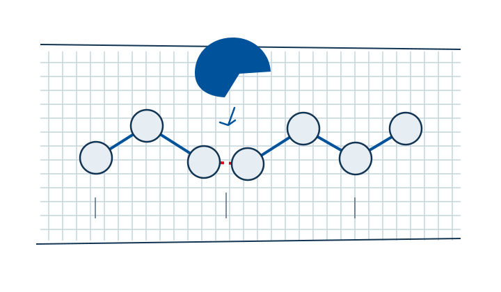

Protein-containing stains
The detergent-specific preparation and intended use
Protease for detergent formulationsMatch the material in a stain with the enzyme function your formulation needs. Explore SUNSON proteases and multi-enzyme blends for liquid or powder detergent development.
Explore detergent enzymes
Proteases act on proteins. That function makes protein-containing stains a starting point for detergent protease selection.
Review the preparation against the surrounding ingredients and intended washing conditions. Detergent protease information addresses this cleaning task; feed protease references address a separate application.

SUNSON's detergent range includes liquid and granular multi-enzyme preparations with 3-in-1 and 5-in-1 designations. Confirm the composition and activity specifications for the selected reference before matching it to your cleaning task.
The detergent-specific preparation and intended use
Protease for detergent formulationsThe documented composition for the selected reference
Detergent multi-enzyme blendsThe project brief, scope and feasibility
Custom detergent blend requirementsSUNSON's detergent range includes liquid and granular enzyme preparations. Review the product form alongside the detergent system and the stage where it enters production.
For either system, define the stains and washing conditions represented by the trial.
Record storage and washing conditions separately. Keep changes to the base formulation visible when comparing results.
Include the target stains, liquid or powder formula and enzyme reference if known. Add the incorporation, storage or washing question you want to test.
Discuss your detergent formulationConfirmed inputs in use: company identity and contacts, supplied product materials and the agreed application scope.
Implementation: production domain, enquiry delivery and actual data-processing configuration remain part of the launch work. Forms in this preview do not submit.
Media: concept scenes and packaging positions are layout aids; company media replaces them at the final asset stage.